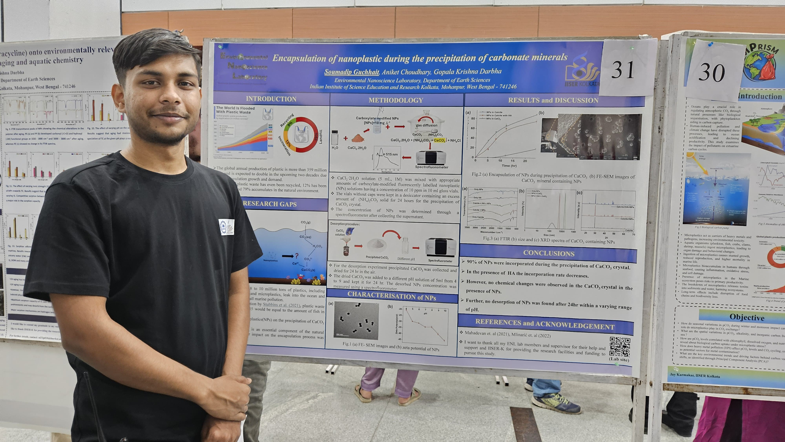
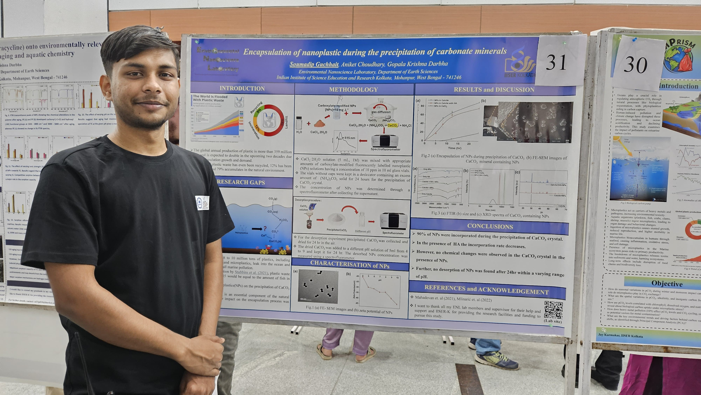
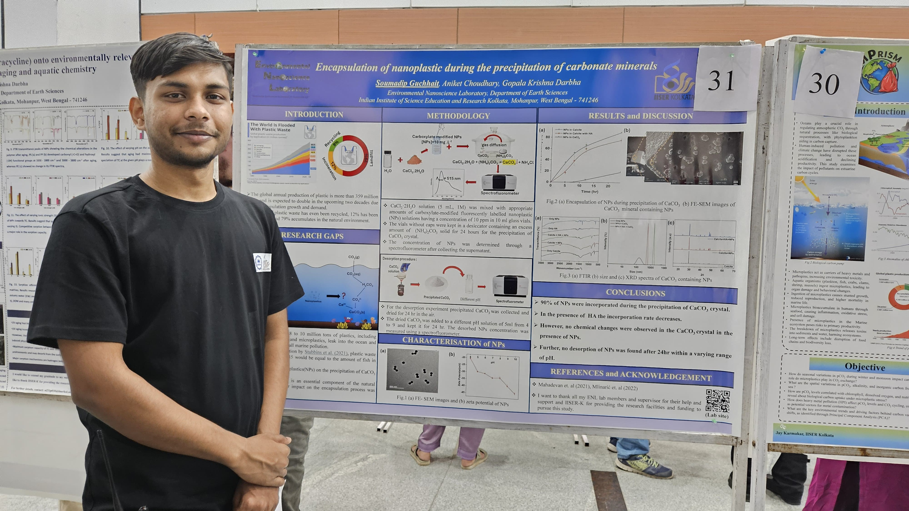
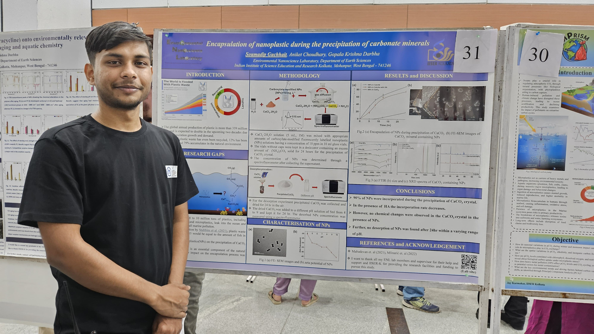

 


I was born in a small village called Deulti in Howrah, in a close-knit joint family. My father managed a small family shop, and my mother, a homemaker, was the backbone of our home. From an early age, I was told one thing again and again — “if you want to succeed, you must study deeply.” Those words stayed with me, and I carried them through my schooldays, studying hard and keeping curiosity alive.
Science always fascinated me, which is why I chose the science stream in higher secondary. But it was after my HS exams that I truly discovered my love for chemistry. I went on to pursue Chemistry Honours at Calcutta University, and that decision shaped the path I walk today.
Clearing JAM opened a new chapter — I entered IISER Kolkata to study Earth Sciences, and soon after, I joined the Environmental Nanoscience Lab as an Integrated PhD student. Here, I began my work on pollutant interactions and their remediation, diving deeper into the hidden connections between emerging contaminants and natural minerals.
I never had a rigid plan for the future. I simply followed what I loved, step by step. And today, I feel grateful and proud to be the first child in my family to pursue a doctorate.
Through all of this, my mother has been my greatest inspiration. She taught me how to adapt in every situation, to keep growing, and to stay strong no matter what life brings. That lesson has been my anchor — in research, in life, and in everything I do.
Authors: Soumadip Guchhait, Aniket Choudhary, G.K Darbha
Science of the Total Environment, 2025
Read MoreAuthors: Zahid Ahmed Ganie, Soumadip Guchhait, Mohmmed Talib, Aniket Choudhary, G.K Darbha
Journal of Hazardous Material, 2025
Read MoreAuthors: Abhishek Mondal, Arpan Sarkar, Sangeetha Thykandi, Soumadip Guchhait, G.K Darbha
Environmental Nanotechnology, Monitoring & Management, 2025
Read More

The Indian Institute of Science Education and Research Kolkata (IISER-K) is a premier research and teaching institute dedicated to science education and cutting-edge research across disciplines. The institute provides state-of-the-art facilities and fosters interdisciplinary collaborations to address pressing scientific challenges.
Visit IISER Kolkata